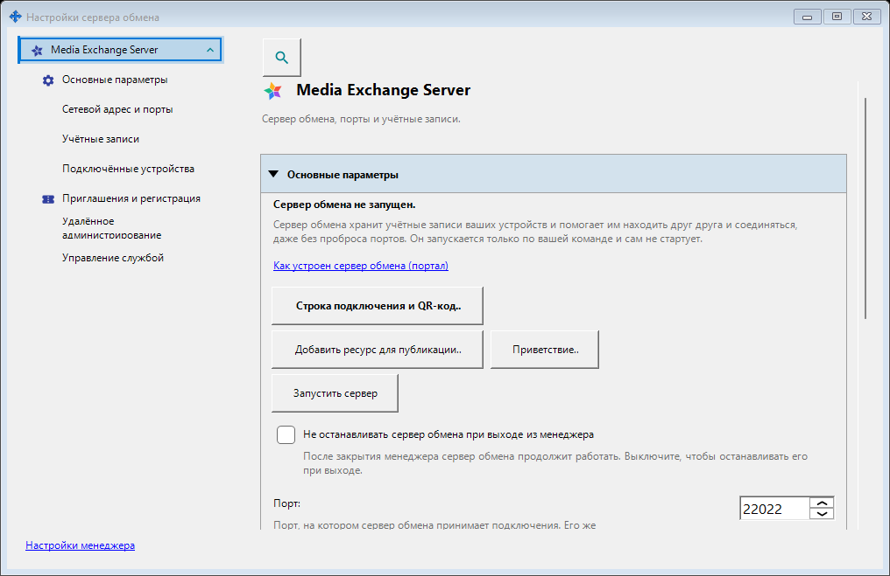
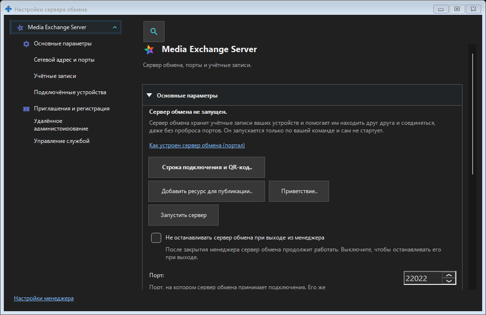

Настройки сервера обмена
Назначение
Здесь управляют сервером обмена, установленным на этом ПК: портом и внешним адресом, сертификатом TLS, учётными записями, устройствами и приглашениями, службой, запретом сна, хранением журналов, удалённым администрированием и аудитом. Вход клиента на удалённый сервер находится в настройках менеджера.


Порядок действий
Откройте сервер из трея, завершения мастера настройки или по ссылке из другого окна. Сначала проверьте сервер и его состояние. Применяйте изменённые группы отдельными кнопками. Запуск, остановка, обслуживание службы и смена сертификата сохраняют свои подтверждения. Открытие и закрытие настроек не запускает и не останавливает сервер.
Элементы окна
Настройки сервера обмена
Здесь управляют сервером обмена, установленным на этом ПК: портом и внешним адресом, сертификатом TLS, учётными записями, устройствами и приглашениями, службой, запретом сна, хранением журналов, удалённым администрированием и аудитом. Вход клиента на удалённый сервер находится в настройках менеджера. Откройте сервер из трея, завершения мастера настройки или по ссылке из другого окна. Сначала проверьте сервер и его состояние. Применяйте изменённые группы отдельными кнопками. Запуск, остановка, обслуживание службы и смена сертификата сохраняют свои подтверждения. Открытие и закрытие настроек не запускает и не останавливает сервер.
Настройки менеджера · Настройки общего доступа SFTP · Настройки сервера обмена